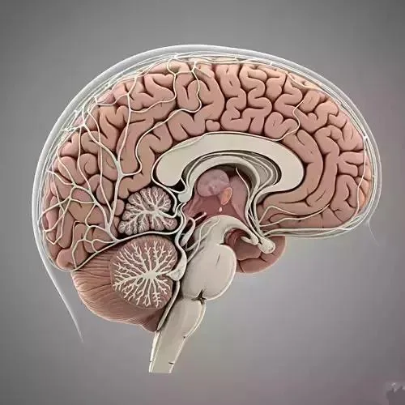
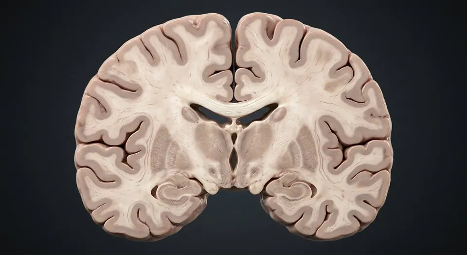

ORGAN → UNDER THE LENS
Neuron and glial support
Tap to compare the organ region with a tissue-level teaching illustration.
Read about Cortical gray matter ↓Midsagittal section: cerebrum, diencephalon, brainstem and cerebellum around the ventricular system.

The brain integrates sensation, generates movement, and supports language, memory and consciousness. It uses about 20% of the body's oxygen and glucose despite being 2% of body weight, and it has almost no energy reserve — four minutes of ischaemia starts to kill neurons. The cerebral cortex is folded into gyri and sulci to pack ~0.15 m² of grey matter into the skull. Beneath it, white-matter tracts such as the corpus callosum connect the hemispheres, while the diencephalon and brainstem handle relay, arousal and the automatic control of breathing, heart rate and blood pressure.
These are educational cutaways, not literal magnifications of an organ pixel or laboratory slides. A ring marks the approximate tissue region; part-specific lines appear only where identifiable.
Tap to compare the organ region with a tissue-level teaching illustration.
Read about Cortical gray matter ↓These 17 structures describe anatomy related to the chapter’s regional illustration. Each entry separates location, function and a clinical point.
The largest part of the brain: two hemispheres of folded cortex over deep white matter, basal ganglia and the lateral ventricles.
What it doesVoluntary movement, sensation, language, memory, personality and conscious thought.
Clinical connectionIts surface folding (gyri and sulci) triples cortical area; abnormal folding causes lissencephaly and epilepsy.
Anterior to the central sulcus and above the lateral sulcus. Contains the primary motor cortex, Broca's area (usually left) and the prefrontal cortex.
What it doesPlanning, judgement, personality, voluntary movement and expressive speech.
Clinical connectionPrefrontal damage (classically Phineas Gage) changes personality and impulse control while sparing memory and IQ.
Behind the central sulcus, above the temporal lobe. Houses the primary somatosensory cortex in the postcentral gyrus.
What it doesProcessing of touch, pain, temperature, position sense and spatial awareness.
Clinical connectionRight-sided lesions cause hemispatial neglect — the patient ignores the whole left side of space.
The posterior pole, bounded medially by the parieto-occipital sulcus, containing the primary visual cortex on the banks of the calcarine sulcus.
What it doesVision — the retinal image is mapped point-for-point on the calcarine cortex.
Clinical connectionA posterior cerebral artery stroke causes a congruous homonymous hemianopia with macular sparing.
Below the lateral sulcus, including the hippocampal formation and primary auditory cortex on the superior temporal gyrus.
What it doesHearing, memory formation, language comprehension (Wernicke's area) and emotion.
Clinical connectionThe medial temporal lobe is the commonest focus of temporal-lobe epilepsy and the earliest region damaged in Alzheimer disease.
The great C-shaped commissure of ~200 million myelinated fibres: rostrum, genu, body and splenium.
What it doesConnects matching regions of the two hemispheres so they work as one brain.
Clinical connectionSurgically sectioned for intractable epilepsy, producing "split-brain" patients who cannot name an object felt in the left hand.
C-shaped CSF cavity in each hemisphere with anterior, body, posterior and temporal horns, lined by ependyma with choroid plexus on the floor.
What it doesCushions the brain and circulates CSF produced by the choroid plexus.
Clinical connectionObstruction of the interventricular foramen causes hydrocephalus and enlargement of the ventricle.
Two ovals of grey matter flanking the third ventricle, subdivided into anterior, medial and lateral nuclear groups.
What it doesThe relay station: nearly all sensory information (except smell) is edited and sent on to the cortex. Also involved in arousal.
Clinical connectionA thalamic stroke can produce severe contralateral sensory loss and thalamic pain syndrome.
Only 4 g, yet it controls the autonomic and endocrine systems: supraoptic, paraventricular, arcuate and suprachiasmatic nuclei.
What it doesTemperature, thirst, hunger, circadian rhythm, and hormone release via the pituitary.
Clinical connectionLesions cause diabetes insipidus, obesity or emaciation, and disruption of sleep-wake cycles.
Sits in the sella turcica below the hypothalamus, joined by the infundibulum. Anterior lobe is glandular; posterior lobe is neural tissue.
What it doesSecretes GH, TSH, ACTH, FSH, LH, prolactin, plus oxytocin and vasopressin released from the posterior lobe.
Clinical connectionA pituitary adenoma pressing upward on the optic chiasm causes bitemporal hemianopia — loss of the outer half of both visual fields.
Tectum (superior and inferior colliculi) plus cerebral peduncles, with the cerebral aqueduct running through it.
What it doesVisual and auditory reflexes, eye movements, and the dopamine-producing substantia nigra.
Clinical connectionDegeneration of the substantia nigra causes Parkinson disease: tremor, rigidity and bradykinesia.
The bulging bridge anterior to the cerebellum, carrying transverse fibres into the middle cerebellar peduncles.
What it doesRelays cortex to cerebellum; holds the pneumotaxic and apneustic centres that shape breathing, plus nuclei of cranial nerves V–VIII.
Clinical connectionOcclusion of the basilar artery can cause locked-in syndrome — full awareness with paralysis of everything except vertical eye movement.
The lowest brainstem segment, continuous with the spinal cord at the foramen magnum. Contains the pyramids, olives and the floor of the fourth ventricle.
What it doesCardiac, vasomotor and respiratory centres; reflexes for vomiting, coughing and swallowing. The pyramidal decussation happens here.
Clinical connectionBecause motor fibres cross at the medulla, a lesion above the decussation paralyses the opposite side of the body.
Two hemispheres and a midline vermis, with a densely folded cortex, deep nuclei (dentate, emboliform, globose, fastigial) and branching white matter — the arbor vitae.
What it doesCompares intended movement with actual movement and corrects it: coordination, precision, timing, posture and motor learning.
Clinical connectionDamage causes ipsilateral ataxia, intention tremor, dysdiadochokinesia and a broad-based gait. Alcohol affects it first.
A diamond-shaped cavity between the pons/medulla in front and the cerebellum behind, draining through the foramina of Luschka and Magendie.
What it doesCSF passes from here into the subarachnoid space around brain and spinal cord.
Clinical connectionBlocked outflow causes obstructive hydrocephalus — a common presentation of posterior fossa tumours in children.
Continues from the medulla at the foramen magnum and ends at L1/L2 as the conus medullaris, with the cauda equina below.
What it doesCarries sensory information up and motor commands down, and runs reflex arcs independently of the brain.
Clinical connectionTransection above C3–C5 stops diaphragmatic breathing; at thoracic level it causes paraplegia with a sensory level.
The folded ridges and grooves of the cortex. Grey matter (neuron cell bodies) is 2–4 mm thick on the surface; white matter (myelinated axons) lies beneath.
What it doesFolding multiplies cortical surface area about threefold within the fixed volume of the skull.
Clinical connectionThe pattern is individually unique and is disrupted in cortical dysplasias that cause focal epilepsy.
These 3 additional entries give anatomical context. They are deliberately not assigned a photographic pin on the regional image.
Related deep chapters: Cerebrum · cortex & deep pathways, Meninges, CSF & venous sinuses, Brainstem & cerebellar circuitry.
Neuronal cell-body sheet folded into gyri and sulci.
What it doesIntegrates sensory, motor and association information.
Clinical connectionRegional cortical lesions give different deficits.
Outer cranial dural layer adherent to inner skull.
What it doesForms tough outer covering and part of sinus walls.
Clinical connectionSpinal epidural space differs from cranial periosteal interface.
Dorsal midbrain paired structure.
What it doesCoordinates orienting eye/head movements to visual stimuli.
Clinical connectionNot the origin of the optic nerve.
Short answers grounded in the structures described above. Use the illustrated guide for anatomical context.
The cerebrum supports complex thought, sensation and voluntary movement; the cerebellum coordinates movement; and the brainstem connects the brain to the spinal cord and helps regulate essential functions.
The skull, three meningeal layers and cerebrospinal fluid provide physical protection. Blood vessels supply its metabolically active tissue.
Anterior to the central sulcus and above the lateral sulcus. Contains the primary motor cortex, Broca's area (usually left) and the prefrontal cortex. Function: Planning, judgement, personality, voluntary movement and expressive speech.
Two ovals of grey matter flanking the third ventricle, subdivided into anterior, medial and lateral nuclear groups. Function: The relay station: nearly all sensory information (except smell) is edited and sent on to the cortex. Also involved in arousal.
Function: Compares intended movement with actual movement and corrects it: coordination, precision, timing, posture and motor learning. Two hemispheres and a midline vermis, with a densely folded cortex, deep nuclei (dentate, emboliform, globose, fastigial) and branching white matter — the arbor vitae.
Follow these connected structures and body systems in the illustrated atlas.

Cerebrum · cortex & deep pathwaysTrace cortex, white matter, corpus callosum, basal nuclei and thalamus on a realistic coronal section.↗ Meninges, CSF & venous sinusesFollow dura, arachnoid and pia; then CSF from choroid plexus to subarachnoid drainage.↗
Meninges, CSF & venous sinusesFollow dura, arachnoid and pia; then CSF from choroid plexus to subarachnoid drainage.↗ Brainstem & cerebellar circuitryLocate brainstem levels, cranial-nerve nuclei, pyramids and cerebellar peduncles, cortex and nuclei.↗
Brainstem & cerebellar circuitryLocate brainstem levels, cranial-nerve nuclei, pyramids and cerebellar peduncles, cortex and nuclei.↗ Spinal cordCross-section: a grey butterfly inside white tracts, wrapped in three meninges.↗
Spinal cordCross-section: a grey butterfly inside white tracts, wrapped in three meninges.↗General anatomy references and related source chapters for continued study. These links do not make the digital illustrations clinical images or certify every anatomical variant.
This educational page is not medical advice and has not undergone formal clinical peer review. Spotted an error? Contact the editor.
Open the realistic interactive plate, label lines, focus view and self-test.